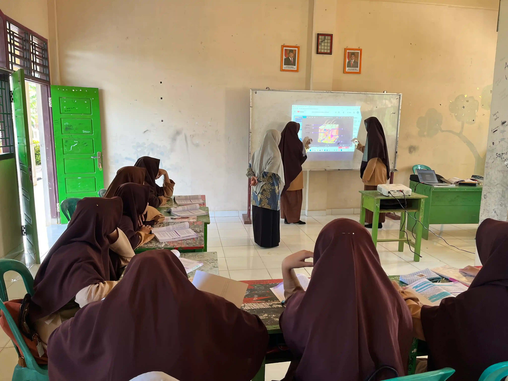

Mencetak Generasi Tafaqquh Fiddin & Berakhlak Mulia
Pondok Pesantren Al-Ihsan Sungai Rumbai (PPAI) Mukomuko Bengkulu. Memadukan pengkajian khazanah Kitab Kuning klasik, hafalan Al-Qur'an, dan pendidikan madrasah terakreditasi di atas lahan wakaf seluas 29.480 m².
Profil Pondok Pesantren Al-Ihsan Sungai Rumbai
Pondok Pesantren Al-Ihsan Sungai Rumbai (PPAI) adalah pusat pendidikan Islam yang berdedikasi membimbing para santri dengan keteladanan akhlak, pendalaman kitab kuning, dan kurikulum madrasah terpadu di Kabupaten Mukomuko, Provinsi Bengkulu.
Identitas & Legalitas Resmi
Terdaftar Resmi Kementerian Agama RI
 Pimpinan
Pimpinan
H. Yakub & Ustadz Jalil
Ketua Yayasan: H. Yakub • Pengasuh Pesantren: Ustadz Jalil
"Mendidik generasi dengan penuh keikhlasan, membekali santri dengan akhlakul karimah, ketajaman pemahaman ilmu agama (tafaqquh fiddin), serta kecintaan pada Al-Qur'an."
"Mencetak generasi santri yang beriman dan bertakwa kepada Allah SWT, berakhlak mulia, mutafaqqih fiddin melalui penguasaan kitab kuning dan tahfidzul Qur'an, serta mandiri dan siap mengabdi bagi umat dan bangsa."
Tafaqquh Fiddin
Kitab Turats Klasik
Akhlakul Karimah
Kemandirian & Adab
Jejak Langkah Pondok Pesantren Al-Ihsan
Pendirian & Izin Operasional
Penerbitan izin resmi Kementerian Agama, peletakan pondasi pesantren, dan dimulainya operasional MTs Al-Ihsan di Desa Gading Jaya.
Legalitas Yayasan & Wakaf
Pengesahan Akta Notaris Yayasan Al Ihsan Riski Sungai Rumbai No. 177 serta pengamanan aset wakaf tanah seluas 29.480 m².
Pembangunan Terpadu
Perluasan gedung asrama putra-putri, penambahan ruang kelas madrasah, masjid pesantren, dan pembangunan laboratorium komputer santri.
Pengembangan Prestasi
Penguatan pembinaan 301 santri mukim bersama 39 asatidz, ekspansi sarana olahraga, hadroh berprestasi, dan penerimaan santri baru terpadu.
Satuan Pendidikan di Bawah Naungan Pesantren
Mengintegrasikan kurikulum Kementerian Agama Republik Indonesia dengan kurikulum kepesantrenan salafiah & pembinaan tahfidz Al-Qur'an.

Jenjang Menengah PertamaMadrasah Tsanawiyah (MTs) Al-Ihsan
Kepala Madrasah: Edi Susanto, S.Sos.I
Pendidikan formal tingkat menengah pertama terakreditasi resmi di bawah Kemenag, memadukan ilmu sains umum dengan kurikulum agama, nahwu-shorof dasar, dan tahfidz.
 Jenjang Menengah Atas
Jenjang Menengah Atas
Madrasah Aliyah (MA) Al-Ihsan
Persiapan Perguruan Tinggi & Turats
Membina santri tingkat lanjutan atas untuk memperdalam tsaqafah Islamiyyah, kemahiran berbahasa Arab, hafalan Qur'an, serta persiapan seleksi perguruan tinggi negeri maupun keagamaan.
 Dirosah Islamiyah Salafiyah
Dirosah Islamiyah Salafiyah
Madrasah Diniyah & PKPPS
Kajian Kitab Kuning Mu'tabarah
Program pendidikan kepesantrenan murni mencakup Fiqih, Nahwu-Shorof, Tauhid, Hadits, Tafsir, dan Akhlak dengan sistem pengajaran sorogan, bandongan, dan talaqqi.
Populasi Santri & Tenaga Pendidik Aktif
301 Santri Mukim (138 Putra, 163 Putri) dibimbing oleh 39 Asatidz/Asatidzah (22 Putra, 17 Putri) yang tinggal di lingkungan pesantren.
6 Program Unggulan Pesantren Al-Ihsan
Dirancang untuk mewujudkan santri yang unggul spiritual, kokoh intelektual, berjiwa seni islami, serta tangkas jasmani.
 Dirosah Islamiyah
Dirosah Islamiyah
Pengkajian Kitab Kuning Klasik
Pembacaan dan telaah mendalam kitab-kitab turats mu'tabarah dalam bidang Fiqih, Ushul Fiqih, Nahwu-Shorof, Hadits, Tafsir, dan Tasawuf bersama Asatidz pengasuh.
 Kalamullah
Kalamullah
Tahfidz & Tahsin Al-Qur'an
Program bimbingan tahsin makharijul huruf, tajwid tartil, dan ziyadah hafalan Al-Qur'an terjadwal setiap pagi dini dan petang secara istiqomah.
 Digital & TIK
Digital & TIK
Laboratorium Komputer & TIK
Fasilitas lab komputer representatif untuk praktikum santri putra dan putri, mengasah keterampilan aplikasi perkantoran, desain dasar, dan literasi digital.
 Public Speaking
Public Speaking
Muhadatsah & Khitobah Santri
Latihan pidato mingguan, percakapan bahasa harian (Muhadatsah), dan khitobah dakwah untuk membentuk rasa percaya diri dan kecakapan komunikasi di muka umum.
 Seni & Sholawat
Seni & Sholawat
Seni Hadroh & Sholawat
Grup hadroh berprestasi yang aktif melantunkan qasidah sholawat pada acara keagamaan, peringatan hari besar Islam, dan perlombaan seni budaya Islam.
.webp) Kebugaran Fisik
Kebugaran Fisik
Bela Diri Silat, Panahan & Voli
Pembinaan ketahanan fisik dan kedisiplinan melalui seni bela diri pencak silat, olahraga sunnah panahan, turnamen voli, dan bulu tangkis santri.
Kehidupan & Jadwal Harian Santri Al-Ihsan
Ritme harian teratur dari bangun pagi hingga istirahat malam yang menanamkan kedisiplinan, kemandirian, kekhusyukan ibadah, dan kehangatan ukhuwah islamiyah.
Qiyamul Lail & Subuh
03.30 – 06.00 WIB
- check_circle Shalat Tahajud & Dzikir Bersama
- check_circle Shalat Subuh Berjamaah di Masjid
- check_circle Halaqah Qur'an / Setoran Hafalan
KBM MTs & MA
07.00 – 13.30 WIB
- check_circle Apel Pagi Santri & Sarapan
- check_circle Pembelajaran Formal Madrasah
- check_circle Shalat Dzuhur Berjamaah & Makan Siang
Ashar & Ekstrakurikuler
15.00 – 17.30 WIB
- check_circle Shalat Ashar Berjamaah
- check_circle Pencak Silat, Voli, Panahan & Hadroh
- check_circle Mandi Bersih & Persiapan Ibadah Petang
Kajian Kitab & Mutala'ah
18.00 – 22.00 WIB
- check_circle Shalat Maghrib, Isya & Tadarus
- check_circle Madrasah Diniyah & Kajian Kitab Kuning
- check_circle Belajar Mandiri (Mutala'ah) & Istirahat
Ragam Potret Keaktifan Santri Al-Ihsan

Shalat Jamaah
Ibadah 5 waktu

Tahfidz Qur'an
Setoran hafalan

Kajian Kitab
Dirosah Islamiyah

Pencak Silat
Bela diri santri

Pramuka
Kemandirian & adab

Rihlah Alam
Tadabbur lingkungan
Sarana & Fasilitas Lengkap Pesantren
Di atas lahan wakaf seluas 29.480 m², Pondok Pesantren Al-Ihsan Sungai Rumbai menyediakan fasilitas representatif untuk mendukung ibadah, akademik, dan kesehatan santri.

Masjid Pesantren
Pusat peribadatan shalat lima waktu berjamaah, shalat jumat, dzikir bersama, serta majelis kajian kitab dan tabligh akbar warga pesantren.

Gedung Asrama Santri
Kompleks asrama putra dan asrama putri terpisah secara mandiri, dilengkapi ranjang, ventilasi yang sejuk, serta pengawasan musyrif/musyrifah 24 jam.

Laboratorium Komputer
Dilengkapi unit komputer PC modern untuk pembelajaran teknologi informasi santri, pelaksanaan asesmen madrasah, dan pelatihan aplikasi digital.

Khazanah Kitab Kuning
Koleksi pustaka kitab kuning klasik terlengkap dari berbagai cabang ilmu syariat, buku rujukan dirosah islamiyah, dan literatur keislaman.

Lapangan Olahraga Multifungsi
Sarana lapangan voli putra-putri, bulu tangkis, latihan pencak silat, panahan, dan area senam santri untuk menjaga kesehatan dan stamina.

Kawasan Kampus Hijau & Tenang
Luas kawasan 29.480 m² yang dikelilingi pepohonan asri, menciptakan suasana tenang yang sangat kondusif untuk menghafal Al-Qur'an dan mutala'ah kitab.
Galeri Kegiatan & Potret Santri Al-Ihsan
Kumpulan potret keseharian, pembelajaran, prestasi, dan panggung kreativitas santri Pondok Pesantren Al-Ihsan Sungai Rumbai.

Santri Putra Al-Ihsan
Santri Mukim
Santriwati Putri Al-Ihsan
Santriwati Mukim
Dewan Asatidz & Asatidzah
39 Tenaga Pendidik
Halaqah Al-Qur'an
Tahfidz & Tahsin
Kajian Kitab Kuning
Dirosah Islamiyah
Lab Komputer Santriwati
Praktikum Digital
Grup Hadroh MA
Seni Budaya Sholawat
Pentas Kreativitas Santri
Panggung Seni Islami
Pencak Silat Santri
Bela Diri Tradisi
Panahan Sunnah Putri
Fokus & Ketangkasan
Voli Santriwati MA
Kebugaran Jasmani
Lanskap Kawasan Pondok
Lahan 29.480 m²
Eksplorasi Laboratorium
Pameran Inovasi Teknologi
Inovasi Lab Teknologi
Kreativitas Santri
Seminar & Konferensi Akademik
Pengembangan Wawasan
Konferensi Akademik Santri
Forum Diskusi Ilmiah
Talent Show Akademik
Kreativitas & Bakat SantriPenerimaan Santri Baru (PPDB) Tahun Pelajaran 2026 / 2027
Pendaftaran santri baru kini dibuka secara online melalui portal resmi. Daftarkan putra-putri tercinta untuk menimba ilmu agama dan pengetahuan umum di Pondok Pesantren Al-Ihsan Sungai Rumbai Mukomuko Bengkulu.
4 Langkah Mudah Mendaftar Santri
Akses Portal Online
Buka portal pendaftaran.alihsansr.ponpes.id lalu buat akun pendaftaran santri baru.
Isi Biodata & Berkas
Mengisi formulir online santri & orang tua serta mengunggah berkas administrasi (KK, Akta Kelahiran, dan Ijazah/SKL).
Pemetaan & Wawancara
Uji kemampuan membaca Al-Qur'an, pemetaan minat bakat, dan wawancara komitmen mukim di asrama santri.
Pengumuman & Daftar Ulang
Melihat status kelulusan via portal, daftar ulang, penempatan kamar asrama, dan pembagian seragam.
Persyaratan Berkas Pendaftaran
- Mengisi Formulir Pendaftaran online melalui portal resmi di pendaftaran.alihsansr.ponpes.id .
- Fotokopi Ijazah / Surat Keterangan Lulus (SKL) yang telah dilegalisir (2 lembar).
- Fotokopi Kartu Keluarga (KK) & Akta Kelahiran calon santri (2 lembar).
- Fotokopi KTP kedua orang tua / wali santri (2 lembar).
- Pas foto berwarna terbaru santri ukuran 3x4 (4 lembar).
- Surat keterangan sehat jasmani dari dokter / fasilitas kesehatan terdekat.
Rekening Resmi Yayasan Al Ihsan
Seluruh pembayaran administrasi, infaq pengembangan santri, wakaf jariyah tanah dan bangunan ditransfer melalui rekening resmi di atas demi keamanan dan transparansi.
Kunjungi Kampus Pondok Pesantren Al-Ihsan
Terletak di Desa Gading Jaya, Kecamatan Sungai Rumbai, Kabupaten Mukomuko, Bengkulu. Suasana asri dan tenang di atas tanah wakaf seluas 29.480 m².
Pertanyaan Yang Sering Diajukan (FAQ)
Bagikan Informasi Pendaftaran Ini
Bantu sanak keluarga, tetangga, dan sahabat mendapatkan informasi pendaftaran santri baru Pondok Pesantren Al-Ihsan Sungai Rumbai melalui portal online resmi.